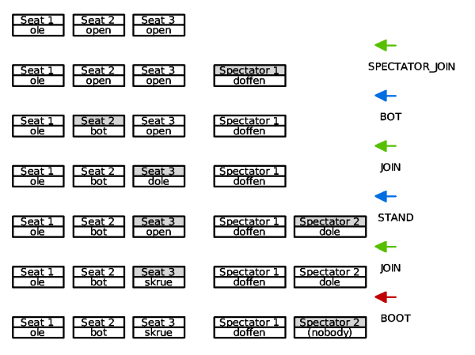

GGZ Game Modules
Revision: 0.1Date: 09.04.2005
Author: Josef Spillner <josef at ggzgamingzone dot org>
Both game servers and game clients are expected to fit into the GGZ game module scheme. This document explains the basic terminology using a game client as an example. Most of it also applies directly to game servers.
Internal states
To facilitate the communication between the GGZ core client and the game client, each running game is assigned a state. Some of those are determined by the core client, while other transitions between two of the states may be modified by the game client.
As can be seen, there are five states in total. In game servers, the CONNECTED state is not present, but the overall design is identical.
Tables and seats
Each GGZ game corresponds to a virtual table, at which the players can sit down to play while others stand behind them to watch. Those who sit in the seats are either human players or bots. Some seats are reserved for humans who haven't arrived yet, others were occupied but are now abandoned by their previous owner and will not be made available to other players again.
This GGZ seat model is very flexible, but also complex and hard to understand. The GGZMod and GGZdMod libraries help in managing the transitions by providing functions for transitions issued by the game and events for transitions issued by the core client or ggzd. The following diagram sheds some light on the issue.

Some remarks with regards to special cases will have to be made. First, if a spectator leaves, sits down or gets booted, the open status of the forsaken seat only lasts until ggzd deletes it since spectator seats are created dynamically. Second, if a player stands up to become a spectator, the forsaken seat will turn to status open.
The following diagram shows in chronological order the table configuration after each seat change event.
